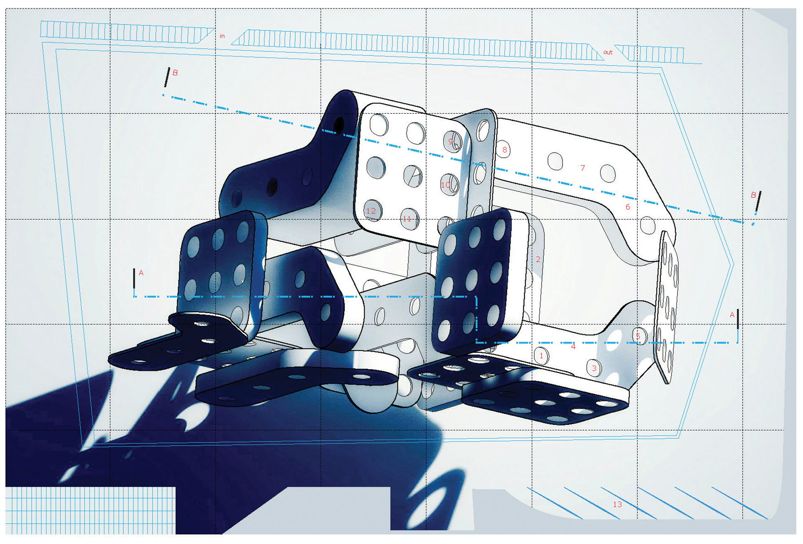

Architectural Graphics
GRAPHIC FIELDS
Building and assembling an erector set can be a lot of fun, but who knew drawing it and rendering the finished product can be even more fun! One unique thing about the erector set is that you can build, rebuild and create mutiple models from a single set.
I began experimenting by physically constructing different models of the erector set and taking photos of the product. After mulitple iterations, I began building them out in Rhinoceros 3D. I also used V-Ray to render the model to get the realistic lighting effects.
Tools used: Rhinoceros 3D, V-Ray, Photoshop, Illustrator

Architectural drawing conventions and graphic standards like cut lines and line weights are also incorporated into the drawings to depict the object as a piece of architecture viewed from the top. I also used some graphic design color principles and techniques and applied them to this drawing.